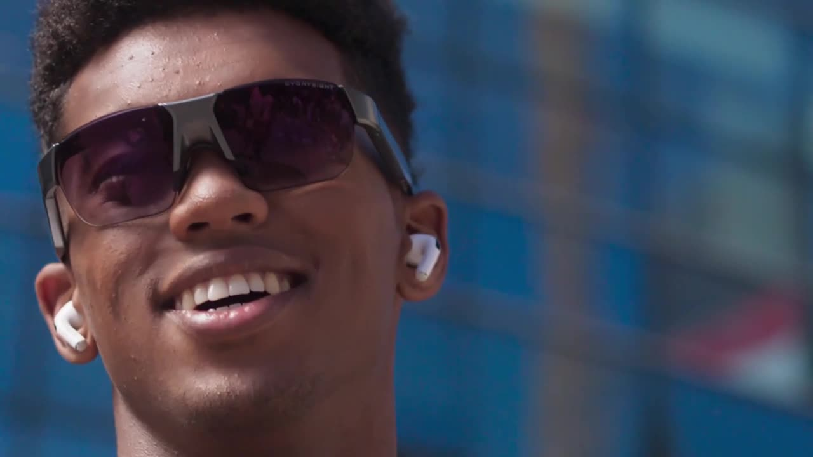

Результат: все четыре ролика готовы. В этой попытке Seedance дал наиболее убедительное спортивное действие и лучше сохранил очки. У Gen-4.5 и Veo есть существенные ошибки взаимодействия мяча с рукой и ракеткой; Kling выполнил действие частично. Ни один результат не готов к публикации брендом: фирменный логотип воспроизведён неправильно; у Gen-4.5, Kling и Veo существенно меняется продукт.
Четыре ролика рядом, 8 секунд.
Один и тот же текст ниже передан Seedance 2.5 / Higgsfield, Gen-4.5 / Runway, Kling O3 Pro / Runway и Google Veo 3.1 / Higgsfield. Все получили одно изображение: кадр на 5.0 секунде исходного ролика, с мужчиной и очками Everysight. Проверено программным сравнением исходящих строк промпта. Runway в ответах сворачивает пробелы; исходящие запросы содержат одинаковый текст.

omni_reference, Veo — reference_images, Runway — startFrame. Это сравнение доступных режимов по одному брифу, а не эксперимент с полностью одинаковыми настройками моделей. Ссылка в промпте не доказывает, что модель открыла PDF или MP4.Create an 8-second, 16:9 Everysight sports ad adapted to outdoor padel.
Official brand guide:
https://cdn.shopify.com/s/files/1/0732/1187/1383/files/Everysite_Brand_Guide.pdf?v=1779290453
Official video reference:
https://cdn.shopify.com/videos/c/o/v/63a1420c27524ae2a5fd74936a73146c.mp4
Use the attached starting image for the athlete's identity and the exact Everysight glasses. Begin with this close-up, then show the same adult athlete wearing a sports T-shirt and shorts, playing padel on an outdoor court enclosed by glass walls and mesh fencing under an open sky. Show a wide court view, dynamic footwork during a rally, a clearly visible ball strike with a solid perforated padel racket, and a close-up of the athlete and glasses. Keep the face, glasses, outfit and court consistent across cuts. Make the racket grip, swing, ball contact and ball trajectory physically believable. Finish within the eight seconds with a brief Everysight end card.
Reference-video visual direction: bright natural sunlight, blue sky, warm neutral clothing, realistic skin and sweat, cinematic close-ups, soft backgrounds, and quick cuts between portraits and medium athletic shots. Match its natural live-action look and restrained product emphasis.
Brand rules extracted from the official guide: primary yellow #EBEB70, dark blue #111723 and light grey #E7E7E7. Supporting colors: #D7D161, #1C2233, #D7D7D7, #8B9DAE and #A6BBCA; black and white are allowed. Use yellow as a distinctive accent rather than tinting the entire scene. Preserve the original Everysight wordmark shape, proportions and letter spacing, with clear space at least the size of its E. Keep it horizontal, high-contrast and free of stretching, shadows or decorative effects. For the end card, follow the reference's white Everysight wordmark on black. Typography for any supporting copy is Plus Jakarta Sans ExtraLight, Regular or SemiBold; keep messages short. Add no supporting copy, invented AR interface, voiceover or dialogue.
| Модель / платформа | ID | Нативная длительность запроса | Цена |
|---|---|---|---|
| Seedance 2.5 / Higgsfield | c6706007-dd04-4d10-9e77-e3c8c77b024e | 8 с | 56 кредитов, preflight |
| Gen-4.5 / Runway | a6ac3ca1-e406-4947-980c-46ac4028ebc3 | 8 с | Наблюдаемое снижение остатка при первой отправке — 96 кредитов; окончательное списание отдельно не подтверждено |
| Kling O3 Pro / Runway | 1cadc6a7-3ec4-4dc2-90d5-35ffb718b863 | 10 с → первые 8 с | Остаток при отправке снизился на 170 кредитов |
| Google Veo 3.1 preview / Higgsfield | 4bca6b8b-e09e-40c5-8bf2-acc57eff9a34 | 8 с | 80 кредитов, preflight |
Кредиты разных платформ не равны по денежной стоимости. Точное время до готовности не измерено; скорость не ранжируется.
Первый запрос Gen-4.5 (0b35a363-6f09-4a95-a8de-de68a783a4ef) завершился технической ошибкой: Runway не разрешил домен изображения Higgsfield. Тот же JPEG загружен в Runway и отправлен повторно с неизменным промптом. SHA-256 обеих копий совпадает: a0447848187e4f653d8467722602a31845d6ff7022ec493bafec611f3f9616e5. Это один успешно полученный вариант, без выбора лучшего из нескольких результатов.
Шкала 1–5: 1 — существенная ошибка; 3 — частично выполнено; 5 — требование выполнено. Оценки субъективные, по одному успешно полученному варианту. Проверены кадры по всему ролику с шагом 0.5 с и более частые кадры около удара. Это визуальная оценка; точная физическая корректность не измерена.
| Критерий | Проверка |
|---|---|
| Очки / продукт | Та же форма оправы, линз и дужек; нет замены на обычные солнечные очки |
| Герой / непрерывность | Узнаваемое лицо, та же одежда и один корт между склейками |
| Падел / физика | Открытый стеклянный корт, перфорированная ракетка, убедительный контакт с мячом и траектория |
| Бренд / визуальная подача | Натуральный свет и подача референса; корректный wordmark и финальная карточка |
| Выполнение брифа | Общий план, движение ног, удар, крупный план, финальная карточка помещаются в оцениваемые 8 с |
| Модель / файл 8 с | Очки | Герой / непрерывность | Падел / физика | Бренд / подача | Бриф |
|---|---|---|---|---|---|
| Seedance 2.5 | 4 | 5 | 4 | 2 | 4 |
| Gen-4.5 | 2 | 4 | 2 | 2 | 4 |
| Kling O3 Pro | 2 | 4 | 3 | 1 | 3 |
| Veo 3.1 | 2 | 4 | 2 | 2 | 3 |
Everysight, вместо фирменного геометрического логотипа. Лучший черновик этого прогона; до публикации нужен точный брендовый финал и проверка продукта.Низкие оценки «Бренд / подача» связаны прежде всего с логотипом и точностью продукта: натуральный спортивный стиль в целом получился у всех. В исходном референсе — геометрическая надпись EVERYSIGHT; генерации заменили её обычным шрифтом, Kling ещё и исказил название.
После замечания Vladimir о движении и мяче отдельно проверены последовательности Gen-4.5 и Kling с частотой 24 кадра/с вокруг удара. Это просмотр последовательностей извлечённых кадров; непрерывного воспроизведения в плеере не было. Первоначальная оценка смешивала убедительность отдельных картинок с убедительностью действия.
Наблюдение Vladimir: «кажется только Seedance справился нормально; остальные не смогли движения и динамику мяча отрисовать». Проверка подтверждает преимущество Seedance и явные ошибки Gen-4.5 / Veo. Для Kling вывод уже: действие есть, исполнение неубедительно как готовая спортивная реклама. Ошибки динамики — самостоятельная причина брака, даже если отдельные кадры выглядят качественно.
В данном запуске Seedance ближе к заданному ролику. Одна попытка не устанавливает общий рейтинг моделей. Тест показывает, что общий кадр и подробные правила текстом помогают получить спортивный черновик, но не гарантируют точную форму продукта и логотип. Для рабочего брендового ролика следующий практический шаг — отдельные контролируемые планы очков и монтаж с готовым официальным логотипом. Новые генерации в рамках этой проверки не запускались.
Все четыре выдаваемых ролика и сравнение: 8.000 с, 1280×720, 25 fps, 200 кадров, без звука. Kling обрезан до первых 8 с без ускорения; нативный исходник был 1920×1080, остальные — 1280×720. Цвет, содержание кадров и логотипы вручную не исправлялись; сделаны только обрезка и приведение к общему формату. Подписи есть только в сравнительном видео.
[[Work_and_Projects/Tracker/Higgsfield/02-model-landscape/brief|Требования Part 2]] · [[Work_and_Projects/Tracker/Higgsfield/00-status|Higgsfield — статус]].